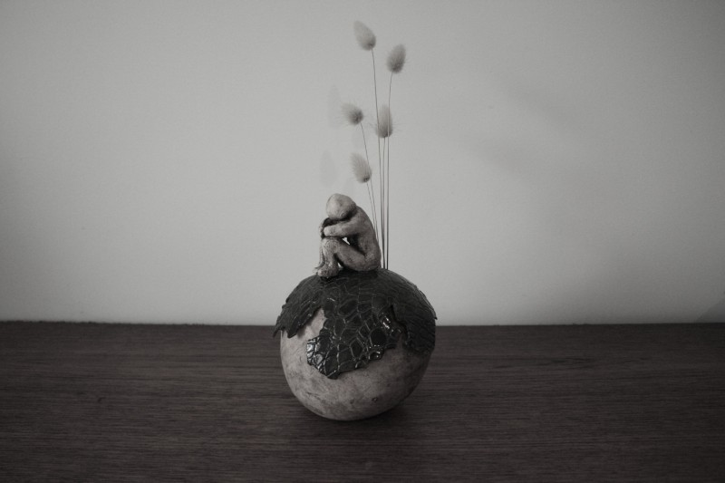

Persoonlijke urnes · handgemaakt
Een uniek leven in klei gekneed.
Unieke urnen voor mens en dier. Bo Repo is ontstaan uit een behoefte aan meer verbinding: een persoonlijke, esthetische aanpak rond sterven.
Er wordt noestig gekneed aan de website van Bo Repo!
Deze zal in februari 2027 verschijnen.


Tot die tijd
Kijk alvast even binnen.
In afwachting van de nieuwe website, kan je mijn werk en voorbeelden bekijken op Instagram. Ik deel er het huidige reilen en zeilen van Bo Repo. Voor verdere vrijblijvende informatie kan je me altijd mailen.